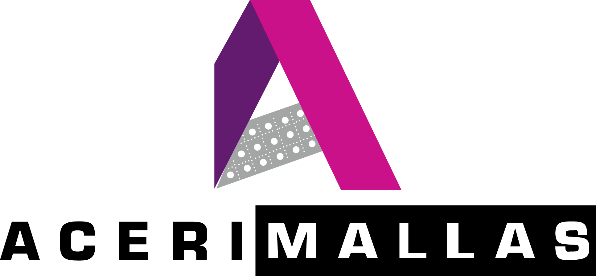

<ion-header >
<ion-toolbar no-border>
<ion-buttons >
      <ion-button [routerLink]="['/']">
        <ion-icon style="display:none"color="acerimalla"name="chevron-back-outline"></ion-icon>
      </ion-button>
    </ion-buttons>
  
</ion-toolbar>
</ion-header>

<ion-content padding class="vertical-center">
  <div  class="ion-padding">
    <!-- Login form -->
    <ion-item color="light">
      <ion-input id="correo" placeholder="Correo Electrónico" type="email" required></ion-input>
    </ion-item>
    <br/>
    <!-- Password - seePassword  -->
    <ion-item color="light">
      <!--type="{{type}}"-->
      <ion-input id="contrasena" placeholder="Contraseña" type="{{showPass ? 'text' : 'password'}}" required></ion-input>
      <ion-button type="button" clear color="light" item-right (click)="seePassword()">
        <ion-icon id="ver" name="{{changeEye ? 'eye-outline' : 'eye-off-outline'}}"></ion-icon>
      </ion-button>
    </ion-item>
    <!-- Forgot password -->
    <ion-text id= "recordar" [routerLink]="['/forgot-password']"  (click)="forgotPass()">
      ¿Olvidaste tu contraseña?
    </ion-text>
    <br/>
    <br/>
    <br/>
    <!-- LogIn -->
    <ion-button expand="block" color="acerimalla" tappable (click)="login()">
      <ion-text>INICIAR SESIÓN</ion-text>
    </ion-button>
    <!-- Login fb -->
    <ion-button expand="block" color="medium" tappable (click)="loginFacebook()">
      <ion-text text-center>
        Ingresar con &nbsp;
      </ion-text>
      <ion-icon id="fb"  name="logo-facebook"></ion-icon>
    </ion-button>
    <br/>
    <br/>
    <div class="ion-padding ion-text-center">
      <ion-text id="noLog" [routerLink]="['/tabs/home']"  (click)="noLogin()">
        ¡Omitir Inicio de Sesión!
      </ion-text>
    </div>
  </div>
</ion-content>

<ion-footer class="ion-padding ion-no-border ion-text-center">
  <ion-text tappable color="acerimalla">
    ¿Nuevo Usuario? 
    <strong [routerLink]="['/signup']">
      ¡Regístrate aquí!
    </strong>
  </ion-text>
</ion-footer>
